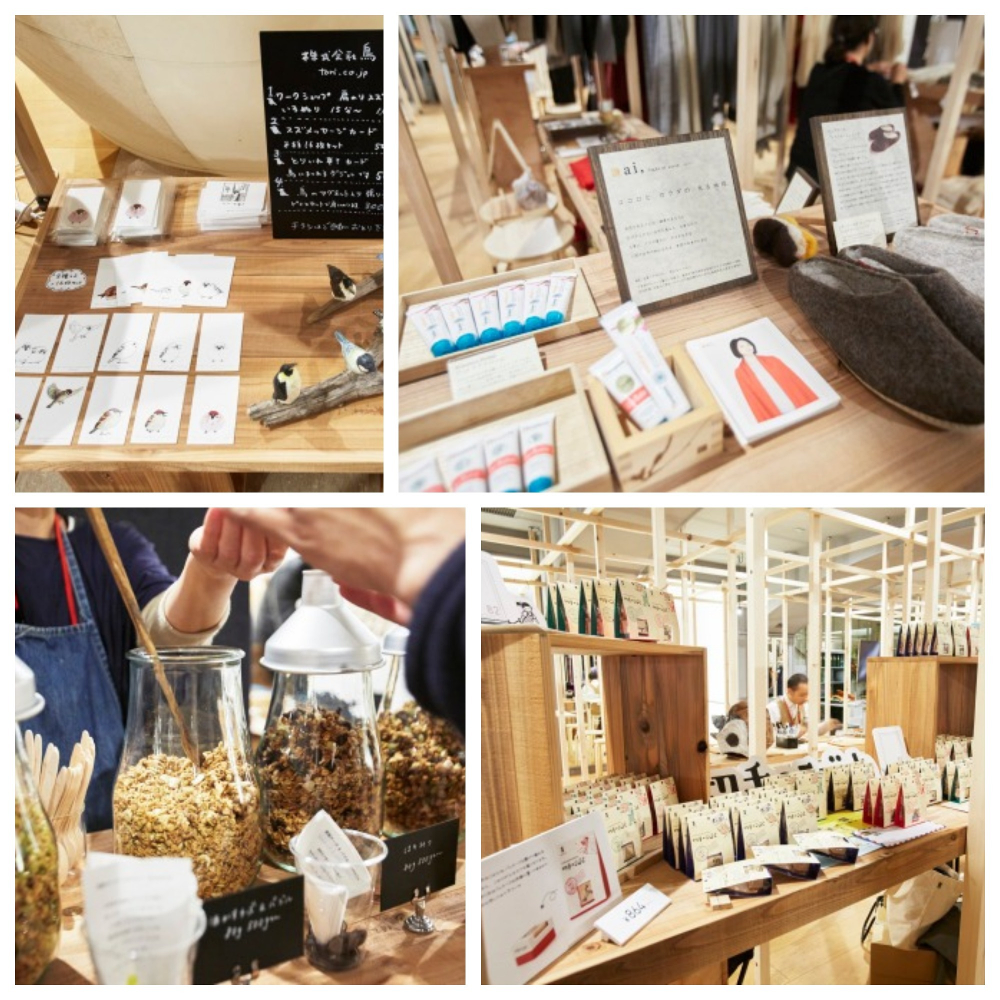

2017.12.14
銀座に1日だけ出店します。
今まで、ゆっくり小さくお店をしてましたが、
香珈も少しずつ変わっていこうと思います。
なぜ、銀座!!??
RIGHT:
https://stand-market.com/

#bs_box(alert,info){{
日時は、2017年12月18日月曜日 11時から19時
場所は、「STAND GINZA / 80」 地下一階
東京都中央区銀座3丁目5−7 B1
地図 → https://stand-market.com/access
東京メトロ銀座駅A9出口から徒歩2分
東京メトロ銀座一丁目駅8番出口から徒歩2分
JR有楽町駅中央出口から徒歩5分
}}
なぜ、銀座「STAND GINZA / 80」なのか!?
香珈は人と場をつなぐ役割の存在でありたいと考えています。
珈琲は、家族と家の間にあります。
つまり、人(家族)と場所(家)の間に脇役として何か感じていただけるものがあると思います。
使われていない場所と今は何もできないと思っている人とをつなぐことができれば、そこに希望や夢を生まれ育つのではないかとも思っています。
そんな思いと、銀座「STAND GINZA / 80」の考えが一致していると思ったので、思い切って1日だけですが出店することにしました。
空きテナントを活用して、1㎡・1日単位で出店できます。銀座の中心の新しいチャレンジショップとして、誰でも手軽に出店できるのです。
香珈の始めの一歩です。